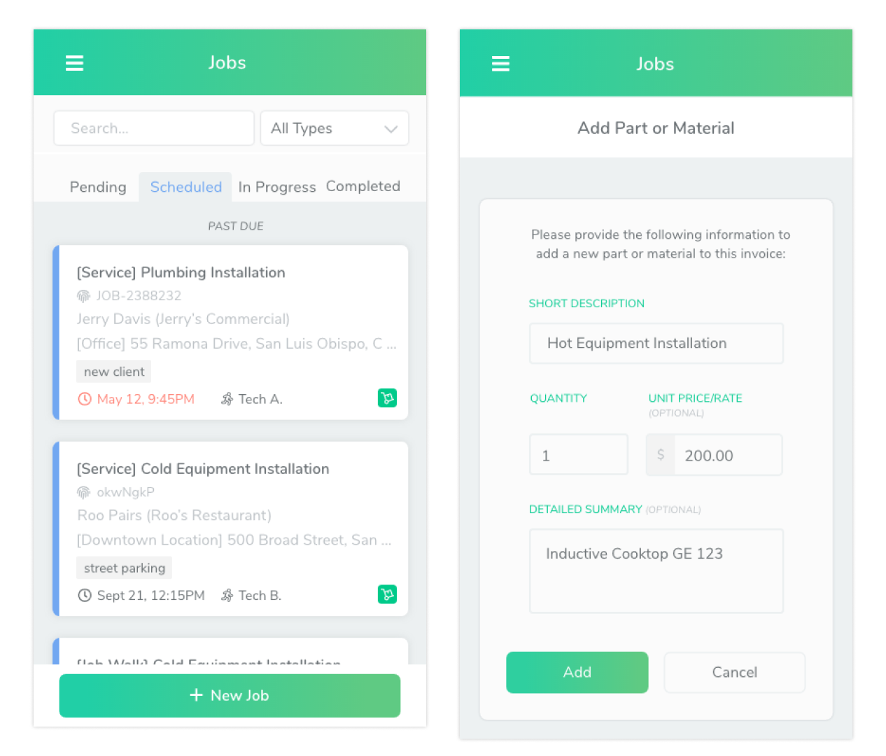
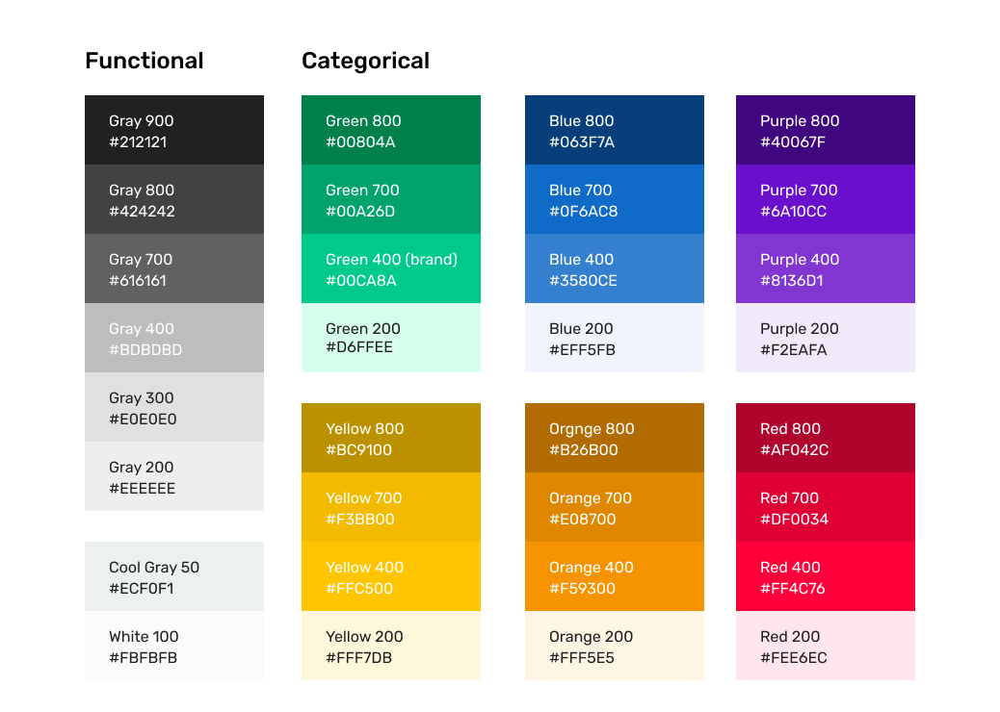
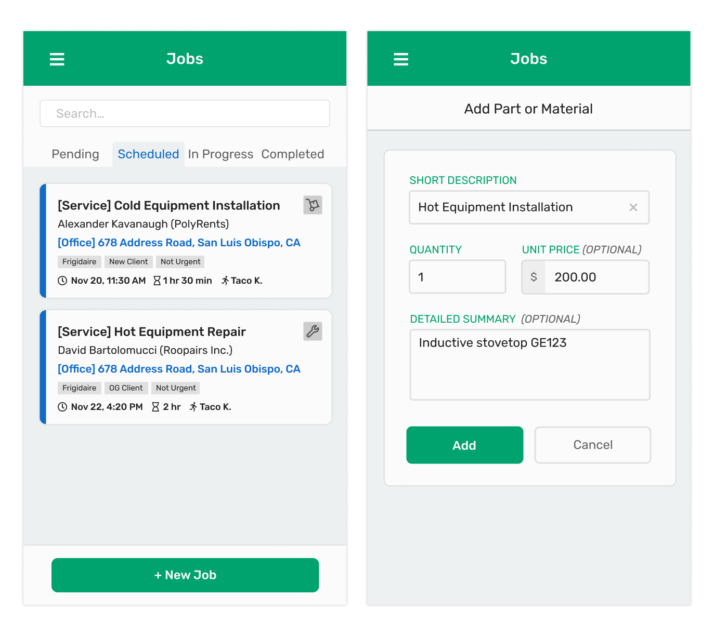

Design System for Accessibility
Roopairs Product Design // Sept-Dec 2020

New colors and typeface for the app.
I built a Design System including a color and type system to resolve accessibility and usability issues. I gained technical knowledge about color and typography and learned about the importance of design systems.
The Problem
Users were experiencing readability issues with the app. They struggled to see the interface under outdoor glare, and smaller fonts were too hard to read.
I research online to gain a better understanding of color and type, specifically focusing on accessibility and readability. Through research, I found that the colors and font weights did not produce enough contrast, making the interface difficult to read especially in outdoor settings.
Old UI with low contrast levels.
The Solution
We set two specific goals to solve this problem:
- Generate a color system that will improve the contrast of the interface.
- Generate a type system that allow for better expression of hierarchy while following brand identity.
Requirements
To accomplish these goals, we had to start a design system. I researched online to learn about how to approach this. Along with several UX articles from medium.com, Mailchimp and ServiceTitan's design system were great sources for me to learn about the purpose of a design system. Here's what I learned about design systems:
- A design system defines the product brand.
- A design system is used by both developers and designers.
- A design system is constantly updated; it's a living document.
- Design system elements are carefully documented, to avoid overhead across different teams.
And here are the requirements I set for the color and type system:
- Each color should have a tint and shade.
- Each color should convey meaning corresponding to color psychology.
- The 400-weight colors measured against our default background color should pass WCAG standards.
- The color system should include documentation of do's and do-not's.
- The type system should be based on a type scale.
Color
Initally, I used Material design's color tool to automatically generate an accessible set of colors. This color palette unfortunately did not get approved by my superiors because it did not include orange and yellow on the palette. Orange and yellow show poorly on screens, so I suggested a design that would not require orange and yellow. However, it did not get approved because they wanted to avoid making major changes to our existing color language. Then, to get yellow and orange, we used paletton.com with a triad and tetrad color combo. For our gray colors, we used Material design's color set.
The approved color palette using paletton.com
Typography
Rubik has always been the typeface of our logomark, but it wasn't used on our app interface. I looked more into Rubik and found some advantages:
- The monospace numerical characters give an analog aesthetic to the dollar values.
- The high x-height provides better legibility at smaller sizes.
- Its 600-weight provides good contrast, while not being overwhelmingly thick.
Yay! We then prototyped several screens to check for readability. I also used a Figma plugin to measure the color contrast as we developed the new screens.
New screens with improved contrast levels.
The Design System
After the new color palette and type scale were approved, I started the design system on Figma. It includes basic information like hex and hsl values, type scales, and usages. I prototyped a few screens as examples to show how our interface will look with the new color and type system.
Challenges
As it is with any team project, communication and decision making was a challenge. I realized that the main problem we had with making design decisions was that people did not have the same baseline of knowledge in design. I made a request to start a new slack channel for the team to link any UX research articles we found useful. This made it easier for us to explain and agree on design decisions, backed by shared technical knowledge.
It was also a challenge to conduct this project with limited technical knowledge. Since I am not a color expert, I relied on online resources to generate a color palette while making sure that it passes color contrast standards. Although I gave my best effort in creating an effective color palette, I'm sure that some adjustments will have to be made before the app is officially deployed. Regardless, I think this was a pretty solid starting point for our new design system.
Looking Forward
To continue with the design system, I still need to prototype the rest of the app with the new color and type system. Then, I can officially document the usages for each color and type, and also include a documentation of do's and do-not's. So far I've set up a system for shadows and spacing, and started developing some of the new screens using Figma's components, variants, and auto-layout. Through this project I learned a lot about the importance of communication through documentation, learned more about color and typography on the web, and got better at fully utilizing Figma features. I hope that the work I did will continue to live and support the success of this startup.